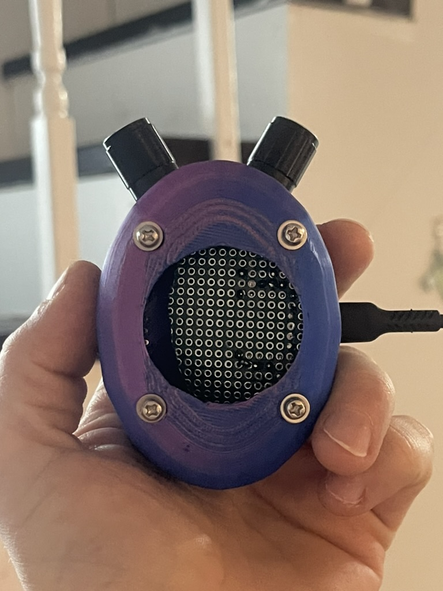
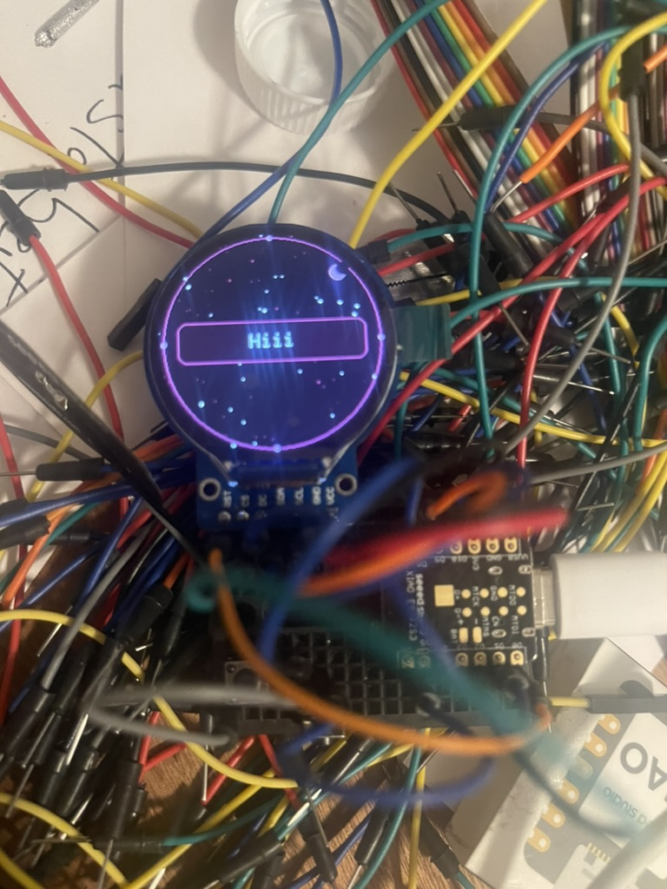

G-Spirit
2026 · Interactive Object
G-Spirit is an interactive object by Nickii Schamborski, 2026.


About the work
G-Spirit is a handheld LoRa object built around an ESP32-S3 with a round display, two EC11 rotary encoders and a DRV2605L haptic driver on a custom PCB, currently in its seventh revision.
Zur Arbeit
G-Spirit ist ein handliches LoRa-Objekt auf Basis eines ESP32-S3 mit rundem Display, zwei EC11 Drehgebern und einem DRV2605L Haptiktreiber auf einer eigenen Platine in der siebten Revision.
Details
- Year
- 2026
- Type
- Interactive Object
- Specs
- ESP32-S3, LoRa (EBYTE E22-900M22S), round display, two EC11 rotary encoders, DRV2605L haptic driver, custom PCB v7
- Institution / place
- School of the Art Institute of Chicago